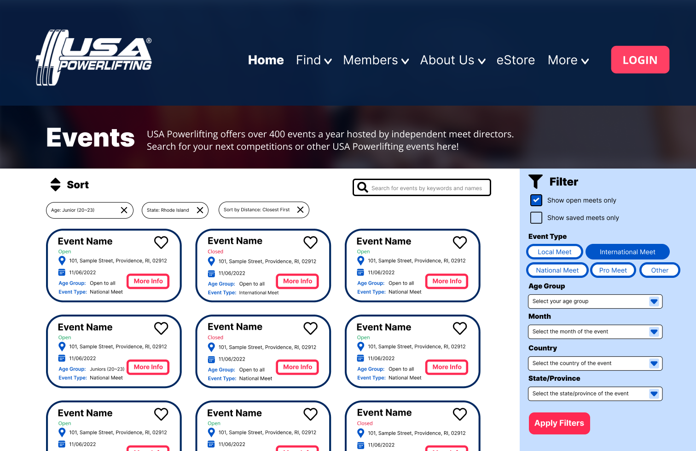

Responsive Redesign
A Case Study on The USA Powerlifting Calendar/Events Page
Project Overview
USA Powerlifting (USAPL) is on par with USPA as one of the two largest powerlifting federations in the US with more than 20,000 members, holding over 400 meets per year (source). It has always been appreciated by lifters from all over the nation for its well-ran meets, great community, and high standards. However, the USAPL official website does not match the federation's quality in other aspects: its design is obsolete and many key functionalities are problematic and inefficient. In this case study, I aim to modernize the website and make its key functionality, searching and registering for events, more efficient and easier to use.
Role
Web Designer
Web Developer
Duration
3 Weeks
Time
Fall 2022
Tools Used
Balsamiq.
Figma
HTML, CSS, & Bootstrap 5
Adobe Photoshop
Content/Executive Summary
Examined the USAPL Calendar/Events Page and related pages to extract usability issues.
Redesigned and prototyped the Home Page using Figma to address usability issues around accessing the Calendar/Events Page.
Sketched out wireframes for the redesigned responsive Calendar/Events Page for different screens and discussed how the new design resolves usability issues.
Created a style guide and developed a Hi-Fi Prototype of the Calendar/Events Page on Figma for different screens and offered plans and suggestions for responsive development.
Implemented the responsive redesign of the Calendar/Events Page using HTML, CSS, and Bootstrap.
Website Overview & Usability Problems


The USAPL Website serves as a hub of resources for members to sign up for meets, seminars, and other USAPL-sanctioned events. The calendar page holds an event finder for the users to navigate and search for potential events to attend. The Calendar Page can be accessed by clicking "Calendar" in the home page's Navigation bar.
Major Functionalities
Users are able to use four distinct drop-down menus to achieve the following functionalities:
-
Search by country (despite what its name suggests, USAPL does hold events in countries outside of The USA, namely Korea and Australia)
-
Search by state
-
Search by month of the current calendar year
-
Search by event level (levels include: COACHING, INT, LOCAL, NATIONAL, OTHER, PRO MEETS, PROSERIES, REGIONALS, STATE, according to the website)

Figure 3. Drop-down menus of the event finder
Main Usability Issues
Accessibility Issue: The Calendar Page Is Hard to Find
-
When the user enters the Home Page, there are no noticeable immediate signifiers or helpful pointers on where to access all the events (See Figure 2). Even in the main menu, the option “Calendar” does not hold a strong association with finding events.
Efficiency Issue: Limited Event-Searching Parameters/Functionalities
-
The event finder itself does not have a searching by name function, making it hard for users who want to find specific meets.
-
The event finder does not have any sorting functionality, so the users have to manually find the meet closest to them geologically or chronologically manually using existing functions.

Figure 4. Current USAPL event label
Recognization Issue: Limited Information on the Label
-
Each event label provides little information, only displaying the event name, date, and state. In addition, The state label is hard to notice due to the small font size and it only includes the state’s initials and no further information.
-
The labels in the event finder do not show if event registration is open or closed due to full capacity, so a user may find a meet of their liking and click in only to find out it is closed.
WebAIM WAVE Analysis
According to WebAIM WAVE, there are 15 spots with low-contrast issues. The issues usually happen when grey and white, some bright colors and white, or a bright color and another bright color are used in tandem. This is a reminder that the different brightness of the colors should be carefully considered in the new iteration.
Also, WAVE provides warnings against the drop-down menus that they are missing labels explaining what each drop-down menu is for. I do agree that the structure, selections, and wording of the menus may be confusing. Thus, careful refinement of the dropdown menus is needed.
Contextual Redesign
From the analysis of usability issues, it seems that the problem with the Calendar Page is not limited to itself: it also has to do with the problematic home page that makes it difficult to locate. Though the main focus of this case study will be fixing the Calendar Page itself, the improvements on the page itself will not be effective if the page cannot be found in the first place. Thus, I redesigned the home page of the website as well to make the Calendar Page easier to find.
NOTE: The contextual re-design is only done in Figma, but the coming re-design of the “Calendar” Page itself will contain low-to-high-fidelity prototypes and a style guide.
.png)
Figure 5. Responsive Render of The USAPL Home Page
Improvements
Added events button at the top of the page

Figure 6. Home Page Button Demo
-
Adopted the original website’s framework that each major function of the website has a sizable button at the top. However, I replaced the “Online Training App” button with the “Events” button. It establishes event-searching as a major functionality of the website and offers users easy access to that functionality.
-
Changed the wording from “Calendar” to “Events” because when a user reads “Calendar”, they may not immediately associate it with a resource for powerlifting competitions or a place for registration. The word “Events” makes sure the users immediately associate the button with the place where they can find event information.
-
Utilized descriptive vector art, brief description, and hover animation to help users recognize the interactivity and purpose of the button intuitively.
Optimized the navigation bar menu
Before

Figure 7. Current USAPL Naviation Bar Menu
After

Figure 8. Redesigned USAPL Naviation Bar Menu
-
Condensed the options to make navigation easier. Put the options more pertinent to the users to the left of the menu so that the users can immediately locate them with the left-to-right scanning pattern. Language like “Find” and “Members” identifies users' needs and encourages actions.
Low-Fidelity Prototype
Wireframes and Annotations

Figure 9. Desktop Wireframe

Figure 10. IPad Wireframe

Figure 11. IPhone Wireframe
1. Included a sort button on the upper left corner of the event display
-
This enables the user to sort the events based on their preference and conditions. I envision the sorting functionalities to include sorting by distance, sorting by dates, and sorting by compatibility with the lifter(system recommendation).
2. Included a search bar
-
the user can search for their event of desire by name, instead of narrowing down the selection using the original parameters.
3. Implemented tags of the filters applied
-
The tags are between the sort button and the labels vertically, showing the filters and sorting function applied. The user can easily see what filter and sorting parameters are applied and further customize their experience based on them. They can delete a previous filter, add a new filter, or clear all filters applied.
4. Included more information in the event labels
-
The event label now each includes the specific address of the event, its date, its type, whether the event is available, and the age group the event is open to. The user now can easily extract information immediately and compare it with other events. They no longer have to click on the label to learn more about essential information.
5. Included a new event status parameter in each event label
-
The event status parameter shows whether the event is open or closed for registration. In addition, there is a new checkbox in the filter section, "Show open events only", where the user can immediately filter out the closed events. This enables the user to easily identify available and unavailable events, saving the time of clicking on the event to find out its availability.
6. Included a bookmark functionality
-
The user can save the event they like by clicking the heart button on the event’s label. They can retrieve them by checking the box “showing saved events only”. The users will save the trouble of using the original parameters or searching in the browser’s bookmarks to re-access a meet they liked.
7. Included a “More Info” button in the labels
-
The user can click the button to learn more about the specifics of the meet including meet director contact information, registration process, etc. This is to prompt the user to take action to interact with the labels and learn more about the events.
High-Fidelity Prototype
Style Guide
A guideline of colorway, fonts, icons, and interactive components for the responsive development of the website

Figure 12. Design Style Guide
High-Fidelity Prototype
Hi-Fi prototype developed with reference to the wireframes
Working with Front End Developers
Prototypes annotated to guide a responsive development.

Figure 13. Figma Prototype: MacBook Pro 14"

Figure 14. Figma Prototype: IPad Pro 11"

Figure 11. Figma Prototype: IPhone 13 Mini

Annotations with actionable steps for front-end developers to implement the website as designed.
Responsive Redesign
Finally, I recreated the shell of the USAPL Events page using my design prototype and annotations using CSS and HTML.
Conclusion
In this project, I attempted to redesign the USAPL website's Calendar Page to improve its usability for its members to browse and search for events. This is not only a redesign for the 20,000 USAPL members, but it is also for the sport of powerlifting overall. I wish to use design to make the sport of powerlifting less unapproachable and more friendly. I also learned to be discipline with my design by putting myself in the developers' shoes, thinking about how my design and documentation can make their jobs easier.For possible future iterations, I look forward to further improving the website by better understanding the users' painpoints and needs through research and further improving aspects of the website such as the event label and filters.